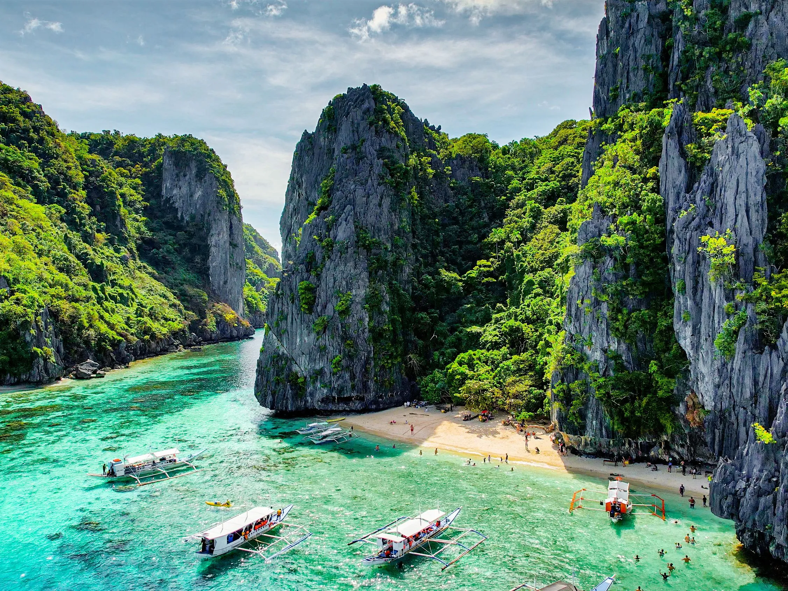

АКТУЕЛНА ПОНУДА

ПАЛАВАН И ТРОПСКИ ОСТРОВИ
Палаван, Филипини
10.07 - 20.07
Откријте го тропскиот рај на Филипините и прекрасниот остров Палаван. Уживајте во кристално чистото море, бели песочни плажи, зелени острови и скриени лагуни. Очекуваат ве незаборавни излети со брод, тропска природа и прекрасен подводен свет. Совршена понуда за љубителите на море, острови и егзотични авантури.
ТРОПСКА АВАНТУРА
Главниот град на Палаван, познат по своето живописно крајбрежје, локалните пазари и тропската атмосфера. Градот е и почетна точка за посета на познатата Подземна река Пуерто Принцеса, една од највпечатливите природни атракции на островот.
Една од најпознатите тропски дестинации на Палаван, позната по тиркизното море, варовничките карпи, скриените лагуни и прекрасните плажи. Ел Нидо нуди совршена атмосфера за островски тури, пливање, сноркелинг и уживање во природата.
Еден од најубавите острови на Филипините, препознатлив по тропските предели, кристално чистото море, варовничките карпи и богатата морска природа. Палаван е идеална дестинација за уживање во плажи, островски тури, сноркелинг и незаборавни природни пејзажи.
Живописни островски предели со бели песочни плажи, кристално чисто тиркизно море и прекрасна тропска природа. Островите нудат идеални услови за пливање, сончање, сноркелинг и релаксација, далеку од градската гужва.
Состанок со групата на аеродром во Скопје, 2 часа пред летот. Следува лет директен лет кон Истамбул , па потоа кон Манила пошто следува диретен лет кон Пуерто Принцеса. По завршувањето на аеродромските процедури следува организиран трансфер до Ел Нидо и сместување во хотел. По сместувањето следува време за одмор и освежување. Попладнето е предвидено за прва прошетка низ околината и запознавање со местото. Вечерта е слободна за вечера и индивидуални активности. Ноќевање во хотел.
Појадок во хотелот и организирана прошетка низ Пуерто Принцеса. Следува посета на Puerto Princesa Baywalk и разгледување на крајбрежниот дел. Потоа е предвидено време за посета на локалните пазари и продавници. Патниците ќе имаат слободно време за ручек, кафе, шопинг и фотографирање. Попладнето е слободно за индивидуално истражување на градот. Вечерта е слободна за одмор. Ноќевање во хотел.
Појадок и организирано тргнување кон Puerto Princesa Underground River. Следува трансфер кон Националниот парк на подземната река Пуерто Принцеса. Потоа следува организирана тура со чамец низ познатата подземна река и пештера. Во текот на турата ќе се разгледуваат импресивните карпести формации и природната околина. По завршувањето следува време за ручек и одмор. Попладнето е предвидено за враќање во Пуерто Принцеса. Вечерта е слободна. Ноќевање во хотел.
Појадок и организирано тргнување кон Ел Нидо. Во текот на патувањето ќе се ужива во тропските пејзажи и природата на Палаван. По пристигнувањето следува сместување и време за одмор. Потоа е предвидена прошетка низ центарот на Ел Нидо и покрај крајбрежјето. Патниците ќе имаат слободно време за кафе, вечера, шопинг и фотографирање. Вечерта е слободна за уживање во атмосферата на Ел Нидо. Ноќевање во хотел.
Појадок и организирано тргнување со брод на островска тура околу Ел Нидо. Следува посета на познатите лагуни, варовнички карпи и скриени плажи. Предвидено е време за пливање, сноркелинг и релаксација во тиркизното море. Во текот на турата ќе има можност за фотографирање на тропските пејзажи. Потоа следува ручек и продолжување на островската тура. Попладнето следува враќање во Ел Нидо. Вечерта е слободна за одмор. Ноќевање во хотел.
Појадок и организирано тргнување со брод кон околните тропски острови. Следува посета на неколку помирни островски локации со прекрасни плажи и кристално чисто море. Патниците ќе имаат време за пливање, сончање и сноркелинг. Предвиден е ручек на островот и време за релаксација покрај морето. Во попладневните часови следува продолжување на островската тура. Потоа следува враќање во Ел Нидо. Вечерта е слободна за индивидуални активности. Ноќевање во хотел.
Појадок во хотелот, по што следува слободен ден во Ел Нидо. Патниците ќе имаат можност индивидуално да го организираат денот според своите желби. Слободното време може да се искористи за плажа, пливање, прошетка и фотографирање. Можно е и изнајмување кајак или дополнителни активности на море. Предвидено е време за ручек, кафе и шопинг во центарот на Ел Нидо. Вечерта е слободна за уживање во крајбрежната атмосфера. Ноќевање во хотел.
Појадок и организирано тргнување со брод кон места погодни за сноркелинг. Следува истражување на подводниот свет на Палаван со можност за набљудување на корали и тропски морски живот. Патниците ќе имаат време за пливање и релаксација во кристално чистото море. Во текот на денот е предвидена пауза за ручек и одмор на плажа. Попладнето продолжува со дополнително време за сноркелинг и фотографирање. По завршувањето следува враќање во Ел Нидо. Вечерта е слободна. Ноќевање во хотел.
Појадок и организирано враќање од Ел Нидо кон Пуерто Принцеса. По пристигнувањето следува сместување во хотелот. Потоа е предвидено слободно време за одмор и последна прошетка низ градот. Патниците ќе имаат можност за шопинг, купување сувенири, кафе и ручек. Попладнето е слободно за индивидуални активности и подготовка за заминување. Вечерта е слободна за вечера и одмор. Ноќевање во хотел.
Појадок во хотелот и одјавување согласно предвиденото време. По собирањето на багажот следува организиран трансфер до аеродромот во Пуерто Принцеса. По пристигнувањето следува пријавување за летот и завршување на потребните аеродромски процедури. Потоа следува диретен лет кон Манила, па кон Истамбул и директен лет кон Скопје. По пристигнувањето и преземањето на багажот завршува организираното патување.